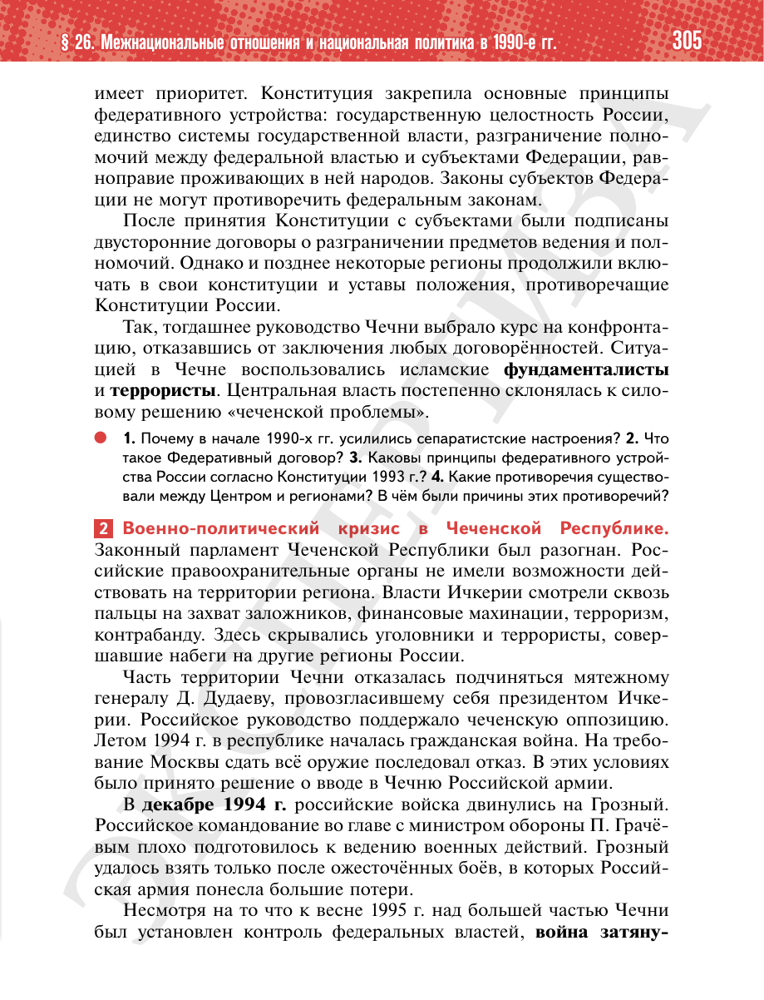

⌂
Мединский.нет
Последнее обновление: 16.08.2026 18:31
Мединский.нет
›
История России. 11 класс. Базовый уровень
›
Глава II. Российская Федерация в 1992 — начале 2020-х гг.
›
§ 26. Межнациональные отношения и национальная политика в 1990-е гг.
›
стр. 306

← стр. 305
Оглавление
стр. 307 →
×